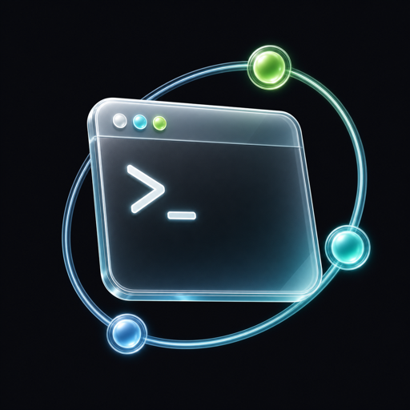

macOS · MCP server
Let your AI agent drive Terminal.app — safely.
Terminal MCP is a local MCP server for Apple's Terminal. Claude and other MCP clients can list sessions, run commands, and read output in the real Terminal windows on your Mac — while you decide, per session, what they're allowed to touch.
- Works with the Terminal you already use — real windows, real scrollback, no hidden shells
- Per-session permissions: block a session, make it read-only, or allow commands
- One-click pause stops all changes instantly from the menu bar
- 100% local — a user-only Unix socket, no HTTP server, no cloud, no telemetry
- Commands are delivered as data, never evaluated or rewritten by the bridge
- History is off by default; command bodies are never stored without an explicit opt-in

Nine tools, one clear contract
Every targeted operation requires a bridge-issued session ID, checked again immediately before it runs — an agent can never "accidentally" type into whatever window happens to be active.
terminal_statusIs Terminal running, how many windows, is the bridge paused.
terminal_list_sessionsEvery window and tab, with busy state and permissions.
terminal_get_active_sessionSee what's focused — discovery only, never a command target.
terminal_create_sessionOpen a fresh Terminal window for the agent to work in.
terminal_send_commandRun a command in one specific, permitted session.
terminal_send_keyArrow keys, Return, Escape and friends for interactive prompts.
terminal_read_outputRead the visible screen or scrollback, capped at 50,000 characters.
terminal_capture_screenA read-only screenshot of the session's window.
terminal_focus_sessionBring a session's window to the front.
Built so you stay in charge
Terminal remains the owner of every shell, window, and byte of output. The bridge adds control — it never adds a back door.
No injection, by design
Commands travel as Apple event values into a pre-compiled script — never pasted into script source, never modified, never evaluated by the bridge.
Local-only transport
The MCP helper talks to the app over a current-user-only Unix socket and verifies who's on the other end. There is no URL, port, or remote control surface.
Private by default
Request history is opt-in. Command bodies and output previews each need a separate, explicit opt-in behind a sensitive-data warning — and stay on your Mac.
How to install
Download & drag
Grab the DMG, open it, and drag TerminalMCP onto the Applications folder.
Grant permissions
Launch the app once. Onboarding walks you through the Terminal Automation permission (plus optional Accessibility and Screen Recording for special keys and captures).
Point your MCP client at it
Add the helper as a local stdio server — that's the whole setup. The helper launches the app for you when it's needed.
{
"mcpServers": {
"terminal": {
"command": "/Applications/TerminalMCP.app/Contents/Helpers/terminal-mcp"
}
}
}
Privacy. Terminal MCP works fully offline and never collects or transmits anything — no commands, no output, no usage data. The app is notarized by Apple. Questions or problems? Write to support@yjlab.io.